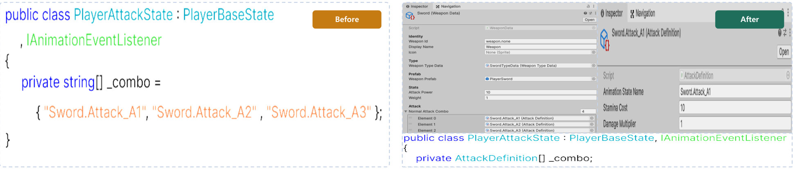

CASE 01
무기를 추가할 때마다 상태 코드를 고쳐야 했던 문제

문제
무기를 추가하거나 콤보를 바꿀 때마다 상태 클래스 코드를 직접 고쳐야 했습니다.
원인
공격 횟수와 애니메이션 이름을 상태가 직접 들고 있어, 데이터여야 할 값이 코드에 섞여 있었습니다.
선택
무기별로 분기하면 조건문이, 상속하면 클래스가 늘어납니다. 값을 데이터로 빼는 쪽을 택했습니다.
구현
공격 구성을 WeaponData와 AttackDefinition으로 분리하고, 상태는 현재 무기 데이터를 참조해 실행만 담당하도록 바꿨습니다.
검증
콤보 구성이 다른 무기 2종을 만들어, 코드 변경 없이 에셋 교체만으로 공격 구성이 바뀌는 것을 확인했습니다.
남은 한계
데이터 값이 잘못 들어가도 실행 시점에야 드러납니다. 에셋 단계 검사는 넣지 못했습니다.